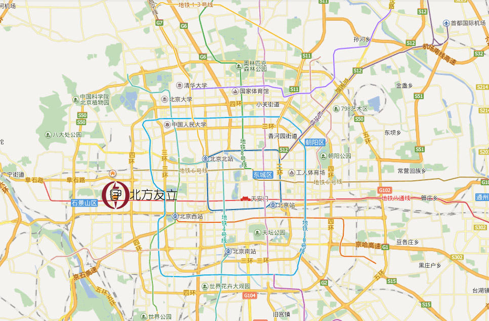

北京北方友立安全技术有限公司简介
- 北京市海淀区复兴路83号
- 100089
- 010-66707773
- 15910724817
北京北方友立安全技术有限公司成立于2007年，是国内最大、最专业的专注于为工业企业、军警及执法机关、公共机构和家庭用户提供防弹、防爆抗爆、防暴恐袭击等物理袭击的硬防护公司，是专业级防弹、防爆抗爆、防暴恐产品与整体解决方案提供商和咨询、工程设计技术服务商。
公司成立之初就和以色列顶级安全防护公司建立了稳定的合作伙伴关系，在引进以色列先进的安全防护产品和解决方案的同时，陆续受让相关核心技术产权，拥有远远领先于国内同行业水平的专业研发与咨询服务、工程设计团队，在防弹、防爆抗爆、防暴恐袭击等领域拥有独有的技术和专利，在国内工业、军警、公共机构等领域中拥有广泛的应用案例和工程设计、实施经验。
公司业务主要应用领域包括军警、核电、石油化工企业、大型公共工程、煤矿、燃气等能源行业、医药、冶金等易燃易爆行业。
